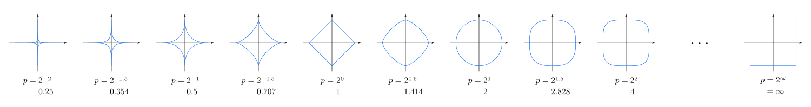
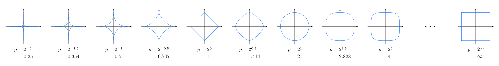

is a set of Vectors ( v ) on which is defined a set of operation, + and ⋅ , vector addition and scalar multiplication, in conjunction with a set of scalars.
Let V be the set of real n-tuples1, and the set of scalars ℝ1
Let's use the "usual" meaning of both
Futher more, to show S as a subset of V is a vector space, it is only necessary to show closure properties
e.g.
V = { a1;,an,....,an }
The an arbitrary linear combination is
all a1;α;1; + a2α2+....+anα;n, ∀ a ∈ ℝ
if there exists constans ai, not all zero, such that ⋅ a¹α¹ + anαn+...+ anαn = 0
Then S is said to be linearly independent.
Another way to characterize linear dependence is that at least one vector ∈ can be constructed as a linear combination of the other vectors
If a set S = { α1;,...,αn } spans a vector space V, then any vector in V can be written as a linear combination of some subset of S.
If a set S spans a vector space V an is linearly independent then S is called basis for V. ( The number of vectors in a basis for V is called it's dimension )
A basis for V forms a set of basic building blocks for V
( ordered tuples )
We use <î, ĵ, û> as our basis
where î = <1,0,0>
where ĵ = <0,1,0>
where û = <0,0,1>
It's easy
An inner product space on V is a real-valued function over V with
For any α,β∈V, ( α,β )2 < = |α2 || β2|
wher |α| = sqrt( ( α,β ) )
For any 2 vectors α,β∈V,
where |α+β| ≤ α+β
Proof: If α = φ, then ( α,β ) = 0 and the ineq. holds
Lets assume α≠φ, and let r∈ ℝ -> r≠0
0 ≤( rα+β, rα+β )
= r2( α,α ) 2r( α,β ) + ( β,β )
0 ≤ ar2 + 2br + r, quadratic r
where a = ( α,α ), b = ( α,β ), c = ( β,β )
Well, for a quadratic to be greater than or equal to zero it can have at most one real root
Algebraiclly how?
4b2-4ac ≤ 0, → b2 ≤ac
b2≤ac
( α, β )2 ≤ ( α,α )⋅( β,β )
( α,β )2 ≤ |α|2|β|2
Orthoganl bases for vector spaces are really important
Let V be an inner product space. α, β∈V
are orthogonal if and only if ( α,β ) = 0
in R2, or R3, orthogonalality is typically thought of as
perpendicularity.
Let S = { α1, ..., αn } be an orthonormal basis for vector space V. [This means
that every pair of thes vectors are not only orthogonal, but eac one is of unit length.]
Then, for any vector v∈V there exists a1, ..., an ∃
v = a1α1 + a2α2 + .... + anαn
So, why is S so important?
It's really easy to find the a's
Notice:
( v, α ) = ( a1α1, a2α2, ....., anαn )
= a1( α1, α1 ) + a2( α2, α1 ) + ...... + an( αn, α1 )
= a1
( v, a2 ) = a2
( b, an ) = an
So, v^- = n∑i = 1 ( v1, αi )αi
takes any basis and produces fromit an orthonomral basis
A norm is a way to measure something. We demand certain properties.
Let V be a vector space. N:V⇒ℜ is a norm iff
|| v || p = [∑n1|xi|p]1/p1, v̄ = <x1,x2,...,xn>, v̄ ∈ℜn
In topology, we refer to the unit set as the "unit ball"
Sp = { x∈ℜ3 | || x || p = 1 } →
 

Let N and M be norms in ℜn, then there ∃ constants c1, and c2 >0 such that
c1M( v̄ ) ≤ N( v̄ ), ∀v̄ ∃V
Let N( x̄ ) be a norm on ℜn. Then, N( x̄ ) is a
continous function of the components, x, s′, of x̄
xx<x1,x2,....,xn>
Proof:
Show if xi≈yi, then N( x̄ )≈N( ȳ )
We have:
( x̄ − ȳ ) = ∑ni = 1( xi−yi )ei
So, N( x̄ − ȳ ) ≤ ∑ni = 1|xi−yi|N( ei ) ≤∑ni = 1max { |xi−yi| } N( ei )
≤ || x̄ − ȳ || ∞∑ni = 1N( ei )
Now using the Reverse Triangle Inequality:
|N( x )-N( y )| ≤ N( x̄ − ȳ ) ≤ || x̄ − ȳ || ∞c, c = ∑n∞i = 1N( ei )
or
|N( x )-N( ȳ )| ≤ c || x̄ − ȳ || ∞
It is sufficent to N arbirary and M the ∞-norm. So, show ∃c1, c2 > 0
c1 || x̄ || ∞ ≤ N( x̄ )≤ c2 || x̄ || ∞
From the lemma, just let ȳ = 0. Then we have
|N( x )-N( y )| = |N( x )| = N( x ) ≤ c2 || x̄ || ∞
But every norm is bounded away from 0.
So, there has to exist a constanc c1>0 ∃ c1 || x̄ || ∞≥0
c1 || x̄ || ∞≤ N( x̄ )≤c2 || x̄ || ∞
c3 || x̄ || ∞≤ N( x̄ )≤c4 || x̄ || ∞
k1 || x̄ || ∞≤ N( x̄ )≤k2 || x̄ || ∞
But this means: If, one norm "goes to zero" meausuring a a changing quantity, then any other norm will also.
Vn⇛V
n⇛∞